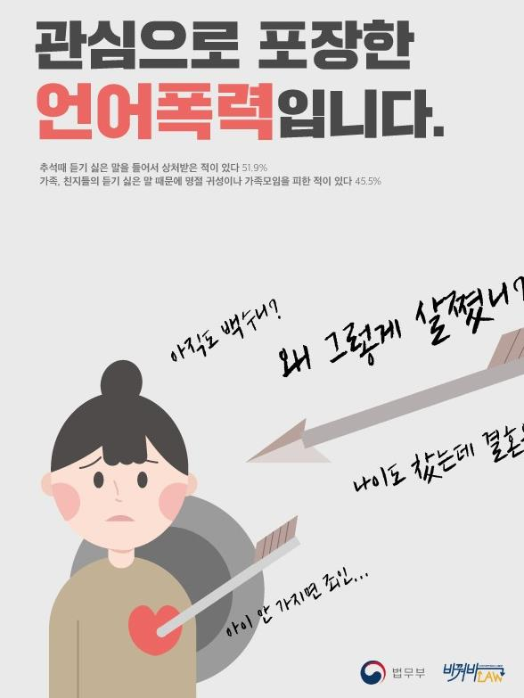
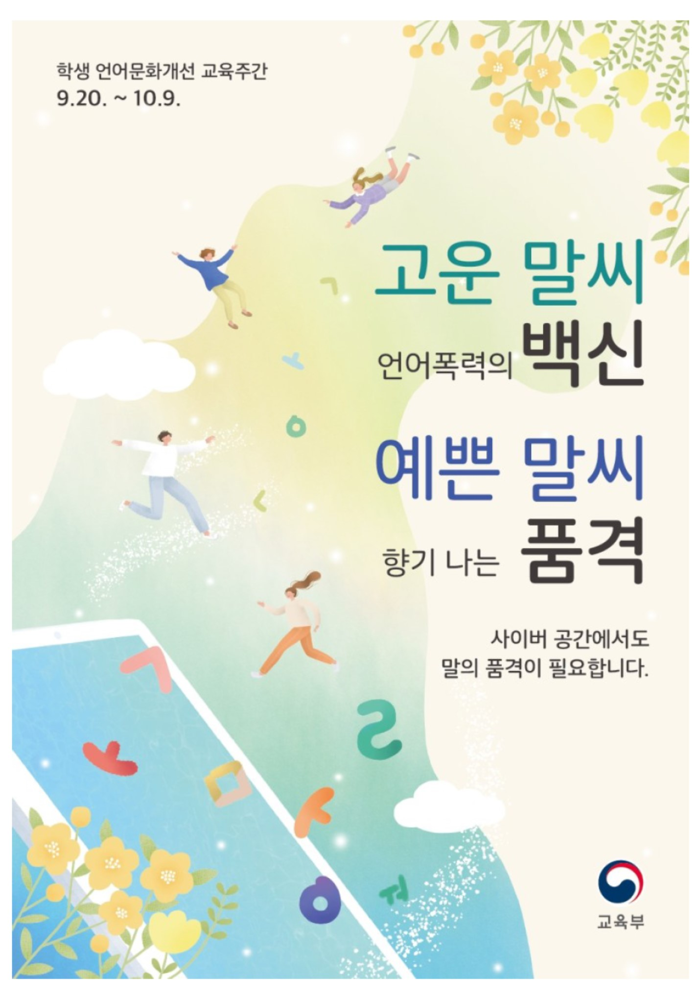
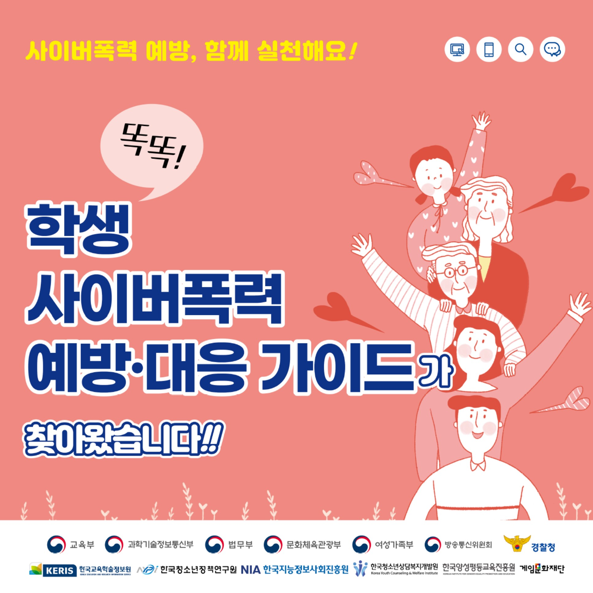

|
 |
 |  |
 |
 |  |  |
 |
관심으로 포장한 언어폭력의 위험성 상대방을 배려하지 않고 장난식으로 내뱉은 말이 듣는 사람에게는 큰 상처가 될 수 있음을 강조 |
02 개인정보보호의 필요성과 방법(35p) 청소년들이 디지털 환경에서 올바른 관계 맺기와 소통할 수 있도록 개인정보 보호의 필요성과 방법을 학습 온라인 테스트를 통해 디지털 시민으로서 자신만이 가진 개인정보에 대해 생각해 보고, 디지털 세상에서 개인정보의 공개 및 관리에 대한 판단과 책임을 학습 |
관심으로 포장한 언어폭력의 위험성 상대방을 배려하지 않고 장난식으로 내뱉은 말이 듣는 사람에게는 큰 상처가 될 수 있음을 강조 |
너에게로 닿는 길-친절과 배려의 가치 다른 사람의 입장을 고려하고 배려하는 사람은 손해를 보는 것 같은 기분이 들 때 배려가 지닌 힘에 대한 가치를 고민해보고 실천화 |
언제 어디서나 우리는, 존중과 책임 대면/비대면 상황에서 본인, 친구, 선생님, 부모님과의 관계 속에서 서로 존중하고 책임있게 행동하는 태도를 함양 |
바르고 고운 말 사용의 중요성 온·오프라인 상에서 바르고 고운 말 사용을 권장하며 언어는 자신의 품격을 나타냄을 강조 |
사이버폭력예방교육 서비스 안내 어플을 통해 함께 실천하는 사이버폭력 예방 가이드를 확인할 수 있도록 정보 제공 |
서로 다르더라도 함께 할 수 있다는 내용을 담은 포스터 인권 공모전 수상작으로 다름을 인정하고 다르더라도 함께 할 수 있다는 내용을 담은 포스터 |
바르고 고운 말 사용의 중요성 온·오프라인 상에서 바르고 고운 말 사용을 권장하며 언어는 자신의 품격을 나타냄을 강조 |